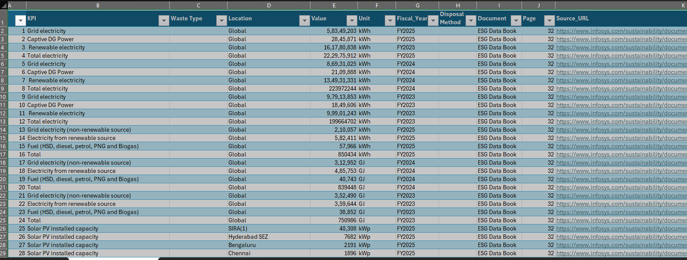
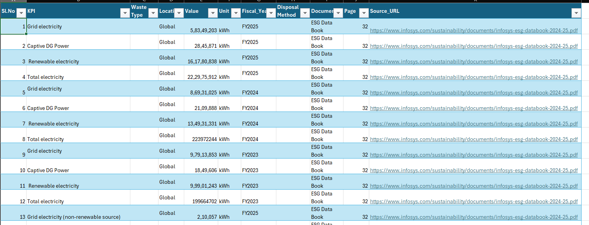

ESG Data Cleaning & Validation
Raw ESG data → cleaning → standardisation → QA → final dataset
01 — Objective
Demonstrate a practical ESG data-quality workflow from raw sustainability data through cleaning, standardisation, validation and final analytical output.
02 — Data Problems to Demonstrate
03 — Workflow
04 — Evidence
Source Register
Master extraction sheet with values, units, pages and source URLs, kept preserved.

Clean ESG Data
Cleaned copy with commas removed from values, and units, fiscal years, names and locations standardised.

Check 1 · kWhElectricity total
Grid + Captive DG + Renewable matches the reported total in all three years. FY2025: 58,349,203 + 2,845,871 + 161,780,838 = 222,975,912 kWh.
Check 2 · GJEnergy consumption total
Grid + renewable electricity + fuel matches the reported total in all three years. FY2025: 210,057 + 582,411 + 57,966 = 850,434 GJ.
Check 3 · kWpSolar PV capacity
The 16 site values add up to the reported total of 60,178 kWp.
Electricity total
Grid + Captive DG + Renewable matches the reported total in all three years. FY2025: 58,349,203 + 2,845,871 + 161,780,838 = 222,975,912 kWh.
Energy consumption total
Grid + renewable electricity + fuel matches the reported total in all three years. FY2025: 210,057 + 582,411 + 57,966 = 850,434 GJ.
Solar PV capacity
The 16 site values add up to the reported total of 60,178 kWp.
Key finding: renewable electricity rose from 99.9 million kWh (50.0% of total) in FY2023 to 161.8 million kWh (72.6%) in FY2025, while grid electricity fell from 97.9 million to 58.3 million kWh.
06 — Files & Evidence
ESG Data QA Workbook
Source register, cleaned dataset and cleaning log in one workbook.
QA Methodology
Definitions, checks and assumptions.